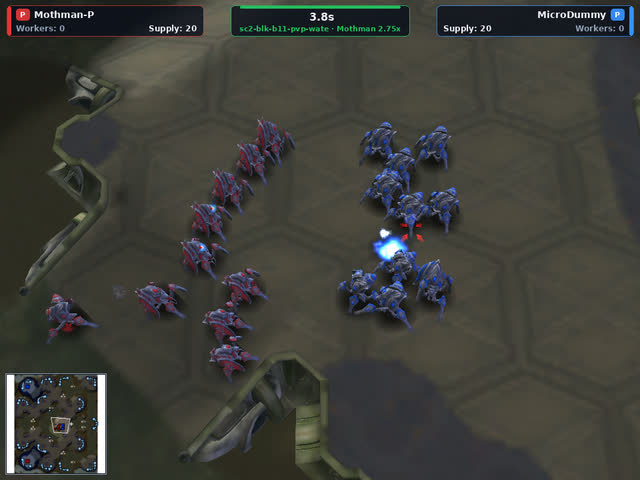
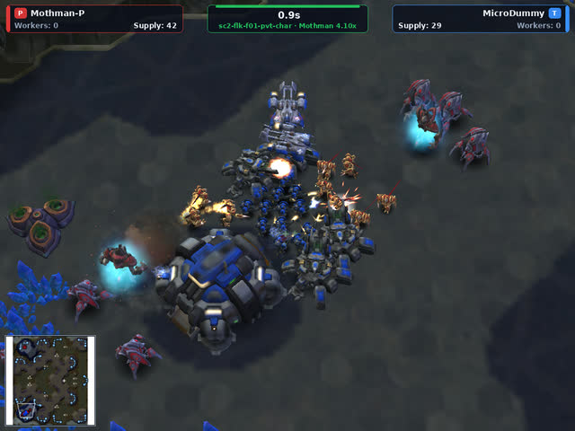
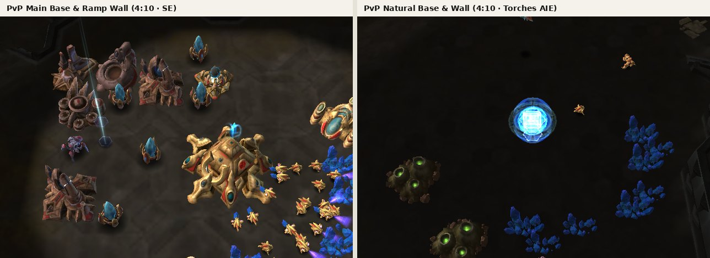
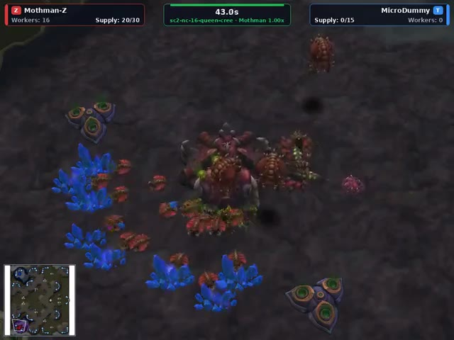

AI Arena Ladder · Live Release #28 (Build 88E)
Mothman StarCraft II Bots
Twelve StarCraft II bots written in Racket play Protoss, Terran, Zerg, and Random across AI Arena's Division 9–10 (current season), Division 9 (long-running), and Division 6 (early-pressure) ladders. This page covers where the live build stands right now; past releases, bug write-ups, and iteration history live on History & Fixes.
Live AI Arena Ladder Standings
Current Season Bots (Division 9–10)
v2 accounts · avg opponent Elo 1381 (896–1541)| Bot | Race | Div | Rating | Season | Opp Elo | Crashes | Notes |
|---|---|---|---|---|---|---|---|
| Mothman-P2 | Protoss | Div 10 | 1414 | 39–91–1 (30%) | 1276 | 0 | Zero crashes across 131 Division 10 games against 1276 average opponent Elo. |
| Mothman-T2 | Terran | Div 9 | 1455 | 51–86 (37%) | 1471 | 0 | Highest current-season rating (1455 Elo in Division 9); 51 wins with zero crashes across 137 games. |
| Mothman-Z2 | Zerg | Div 9 | 1442 | 47–84–6 (34%) | 1470 | 0 | Zero crashes across 137 Division 9 games against 1470 average opponent Elo. |
| Mothman-X2 | Random | Div 10 | 1415 | 41–90 (31%) | 1272 | 0 | Zero crashes across 131 Division 10 games against 1272 average opponent Elo. |
Mothman-P2 · Protoss · Div 101414
39–91–1 (30%) · Opp avg 1276 · 0 crashes
Zero crashes across 131 Division 10 games against 1276 average opponent Elo.
Mothman-T2 · Terran · Div 91455
51–86 (37%) · Opp avg 1471 · 0 crashes
Highest current-season rating (1455 Elo in Division 9); 51 wins with zero crashes across 137 games.
Mothman-Z2 · Zerg · Div 91442
47–84–6 (34%) · Opp avg 1470 · 0 crashes
Zero crashes across 137 Division 9 games against 1470 average opponent Elo.
Mothman-X2 · Random · Div 101415
41–90 (31%) · Opp avg 1272 · 0 crashes
Zero crashes across 131 Division 10 games against 1272 average opponent Elo.
Long-Running Bots (Division 9)
v1 accounts · avg opponent Elo 1474 (1406–1544)| Bot | Race | Div | Rating | Season | Recent Trade | Opp Elo | Notes |
|---|---|---|---|---|---|---|---|
| Mothman-P | Protoss | Div 9 | 1384 | 183–293–46 (35.1%) | 0.71× | 1470 | Long-running Protoss macro account (1384 Elo in Division 9); 183–293–46 across 522 season games against 1470 average opponent Elo. |
| Mothman-T | Terran | Div 9 | 1444 | 176–297–50 (33.7%) | 1.02× | 1473 | Long-running Terran macro account (1444 Elo in Division 9); 176–297–50 across 523 season games against 1473 average opponent Elo. |
| Mothman-Z | Zerg | Div 9 | 1447 | 172–280–70 (33.0%) | 0.48× | 1478 | Highest long-running rating (1447 Elo in Division 9); 172–280–70 across 522 season games against 1478 average opponent Elo. |
| Mothman-X | Random | Div 9 | 1420 | 177–291–55 (33.8%) | 0.53× | 1476 | Long-running Random macro account (1420 Elo in Division 9); 177–291–55 across 523 season games against 1476 average opponent Elo. |
Mothman-P · Protoss · Div 91384
183–293–46 (35.1%) · 0.71× recent trade · Opp avg 1470
Long-running Protoss macro account (1384 Elo in Division 9); 183–293–46 across 522 season games against 1470 average opponent Elo.
Mothman-T · Terran · Div 91444
176–297–50 (33.7%) · 1.02× recent trade · Opp avg 1473
Long-running Terran macro account (1444 Elo in Division 9); 176–297–50 across 523 season games against 1473 average opponent Elo.
Mothman-Z · Zerg · Div 91447
172–280–70 (33.0%) · 0.48× recent trade · Opp avg 1478
Highest long-running rating (1447 Elo in Division 9); 172–280–70 across 522 season games against 1478 average opponent Elo.
Mothman-X · Random · Div 91420
177–291–55 (33.8%) · 0.53× recent trade · Opp avg 1476
Long-running Random macro account (1420 Elo in Division 9); 177–291–55 across 523 season games against 1476 average opponent Elo.
Early-Pressure Bots (Division 6)
Version C accounts · 18 pre-6:00 playbooks · 25–31 (45%) in Division 6| Bot | Race | Div | Rating | Season | Crashes | Notes |
|---|---|---|---|---|---|---|
| Mothman-PC | Protoss | Div 6 | 1592 | 6–8 | 0 | Pre-6:00 Protoss pressure (Cannon Rush, Proxy Robotics, Proxy Stargate, 8-Gate Prism); 6–8 in Division 6 with zero crashes. |
| Mothman-TC | Terran | Div 6 | 1592 | 6–8 | 0 | Pre-6:00 Terran pressure (Proxy 2-Rax Marauder, Reaper, Bunker, and 1-base tech); 6–8 in Division 6 with zero crashes. |
| Mothman-ZC | Zerg | Div 6 | 1592 | 6–8 | 0 | Pre-6:00 Zerg pressure (12-Pool Ling/Spine, 13-12 Ling-Bane, Roach-Ravager, and Nydus); 6–8 in Division 6 with zero crashes. |
| Mothman-XC | Random | Div 6 | 1600 | 7–7 | 0 | Random-advantage early pressure using hidden starting race; 7–7 in Division 6 with zero crashes. |
Mothman-PC · Protoss · Div 61592
Season 6–8 · 0 crashes
Pre-6:00 Protoss pressure (Cannon Rush, Proxy Robotics, Proxy Stargate, 8-Gate Prism); 6–8 in Division 6 with zero crashes.
Mothman-TC · Terran · Div 61592
Season 6–8 · 0 crashes
Pre-6:00 Terran pressure (Proxy 2-Rax Marauder, Reaper, Bunker, and 1-base tech); 6–8 in Division 6 with zero crashes.
Mothman-ZC · Zerg · Div 61592
Season 6–8 · 0 crashes
Pre-6:00 Zerg pressure (12-Pool Ling/Spine, 13-12 Ling-Bane, Roach-Ravager, and Nydus); 6–8 in Division 6 with zero crashes.
Mothman-XC · Random · Div 61600
Season 7–7 · 0 crashes
Random-advantage early pressure using hidden starting race; 7–7 in Division 6 with zero crashes.
AI Arena ratings start at 1600. All twelve active ladder accounts run Release #28 (Build 88E), which replaces hardcoded APM tiers and 23 legacy escrow overrides with a declarative Pro-backed macro plan, continuous single-cap priority allocation, unified tactical operations, record enemy belief tracking (0.88 upgrade F1), and a 4–2–0 head-to-head win over Release #27. Current-season accounts hold zero career crashes across 536 Division 9–10 games, and the four early-pressure accounts (Mothman-PC, Mothman-TC, Mothman-ZC, Mothman-XC) hold 25–31 (45%) in Division 6 with zero crashes. Trade ratio divides enemy army and worker value destroyed by our own value lost.
StarCraft II and benchmark terms used on this page
- Supply-blocked: Share of match time the bot could not train units because it hit its current supply cap (Pylons, Supply Depots, or Overlords). Lower is better; under 4% is solid.
- Natural expansion: The second base site just outside a player's starting main base.
- Bio / 1-1-1 / 12-Pool: Bio is Terran infantry (Marines, Marauders, Medivacs). 1-1-1 is opening one Barracks, one Factory, and one Starport. 12-Pool is an immediate Zergling rush started at 12 workers.
- 14 Core Bots vs. All 26 Local Bots: Locally we test against 14 regular practice bots (Core-14) plus 12 held-out bots (Unseen-12) that we never tune against directly, so we can tell whether a change generalizes. Matches hitting the 30-minute time limit count as ties.
Benchmark Results & Pro Comparison
Overall averages hide a 34-percentage-point spread across the nine matchups on Release #28 (Build 88E): from PvT (5–5–1, 45.5%) down to TvP (1–7–1, 11.1%). Locally we test every release candidate against 14 regular practice bots (Core-14), 12 held-out bots we do not tune against directly (Unseen-12), and head-to-head games against the previous live bot.
All 84 Local31–45–836.9% wins · 0.70× trade · 0.93× min
78 External27–43–834.6% wins · 0.65× trade · 0.89× min
14 Core Bots18–21–342.9% wins · 0.84× trade · 0.99× min
12 Held-Out Bots9–22–525.0% wins · 0.46× trade · 0.79× min
Head-to-Head (6g)4–266.7% vs. prev live · 1.10×
Results by Race
| Race | All 26 External | Win + Tie % | 14 Core Bots | 12 Held-Out Bots | Trade Ratio | Minerals Collected | Supply-Blocked |
|---|---|---|---|---|---|---|---|
| Protoss | 34.6% (9–15–2) | 42.3% | 42.9% (6–8) | 25.0% (3–7–2) | 0.59× | 0.84× | 1.7% |
| Terran | 26.9% (7–16–3) | 38.5% | 35.7% (5–8–1) | 16.7% (2–8–2) | 0.58× | 0.75× | 2.0% |
| Zerg | 42.3% (11–12–3) | 53.8% | 50.0% (7–5–2) | 33.3% (4–7–1) | 0.79× | 1.12× | 3.0% |
Secondary diagnostics across all 78 external games: Gas collected 0.86× (3,444 vs. 4,021 avg); combat upgrade levels 1.6 vs. opponent 1.3; unit tier mix 71% T1 / 26% T2 / 3% T3.
Win rate by matchup: local practice vs. live ladder
Supply-Blocked Time & Worker Growth
All nine matchups stay at or below 3.5% supply-blocked: Protoss runs 1.5% to 1.9%, Terran 1.7% to 2.3%, and Zerg 2.1% to 3.5%.
Average time supply-blocked by matchup (lower is better)
Active workers (minutes 1–10) vs. Pro median
Matchup Breakdown & Early Openings
Local columns cover 78 external games (matches hitting the time limit count as ties). Live Ladder shows recent v1 AI Arena matches for context.
| Matchup | All 26 Local | Win + Tie % | 14 Core Bots | Local Trade | Supply-Blocked | Live Ladder (v1) |
|---|---|---|---|---|---|---|
| PvP | 14.3% (1–6) | 14.3% | 0.0% (0–4) | 0.24× | 1.9% | 40.0% (6–9) |
| PvT | 45.5% (5–5–1) | 54.5% | 50.0% (3–3) | 0.90× | 1.8% | 75.0% (6–2) |
| PvZ | 37.5% (3–4–1) | 50.0% | 75.0% (3–1) | 0.63× | 1.5% | 44.4% (4–4–1) |
| TvP | 11.1% (1–7–1) | 22.2% | 16.7% (1–4–1) | 0.35× | 2.3% | 33.3% (4–8) |
| TvT | 37.5% (3–4–1) | 50.0% | 50.0% (2–2) | 0.78× | 2.1% | 81.8% (9–1–1) |
| TvZ | 33.3% (3–5–1) | 44.4% | 50.0% (2–2) | 0.64× | 1.7% | 77.8% (7–1–1) |
| ZvP | 44.4% (4–4–1) | 55.6% | 50.0% (3–2–1) | 0.56× | 3.3% | 25.0% (3–8–1) |
| ZvT | 37.5% (3–3–2) | 62.5% | 50.0% (2–1–1) | 0.78× | 2.1% | 56.2% (9–7) |
| ZvZ | 44.4% (4–5) | 44.4% | 50.0% (2–2) | 1.11× | 3.5% | 100.0% (9–0) |
PvP (Protoss)
Avg duration 11.1m · 2.0 peak bases
Build 88E · All 2614.3% · 1–6 (0.24×)
Build 88E · 14 Core0.0% · 0–4 (0.15×)
Recent Live Ladder (v1)40.0% · 6–9 (0.37×)
Time Supply-Blocked1.9%
Workers (4m / 6m / Peak)26 / 34 / 47
Peak Army Value (Us / Opp)2,429 / 6,343
First 4 Minutes · Opening Build Order & Style
2-Gate Expand (≤3:30) 73%Delayed / 1-Base (>3:30) 27%Robo Tech 87%Twilight 31%
0:18 · 14 supPylon100% of games
0:40 · 16 supGateway100% of games
0:43 · 16 supGas #1100% of games
1:44 · 22 supCyberCore100% of games
2:52 · 28 supNat Nexus82% of games
3:06 · 30 supRobotics87% of games
3:13 · 31 supBattery58% of games
Supply Count Histogram (Minute 4)
2m: 23 · 3m: 29 · 4m: 39 · 5m: 52 median supply
Natural Expansion Timing Histogram
Median: 2:57 · Pro median: 3:14
What is working
Blink Stalker micro, Immortal and Colossus mid-game pushes, and fast natural Nexus timing when early probes stay unharassed.
Where it breaks
Trails when early aggression delays the second Nexus, forces single-file fights into enemy Colossi, or pushes third-base timing late.
Economy, Army, Upgrades & Spells vs. Grandmaster Pros
What Changed in Release #28 (Build 88E)
- Declarative Pro-backed macro plan & slack escrow engine: Replaced 23 escrow overrides, 9 duplicate gas valves, and 470 lines of brittle macro logic with a compiled Grandmaster curve plan connected to all seven enemy-belief dimensions and a time-horizon slack escrow engine.
- Zero-hardcoded-APM governor & unified tactical operations: Deleted all hardcoded APM percentage ceilings in favor of continuous priority-driven allocation under a single 500-APM cap plus per-unit repair deduplication, which cut urgent macro command drops 93.7% while unifying army posture and home-perimeter defense.
- Head-to-head surge, Protoss & enemy-belief highs: Beat Release #27 4–2–0 head-to-head (1.10× trade, 1.47% supply-blocked), lifted Protoss to a 9–15–2 external high with just 4 gas-starved games, and pushed enemy upgrade belief F1 to 0.88 (387 army-value error) with zero real crashes, wire rejects, or self-cancels.
Release #28 benchmark, architecture & trade-off audit
- Full 84-match benchmark & cohort gains: Finished 31–45–8 overall (36.9% wins, 0.70× trade, 2.20% supply-blocked, 18.63 ms average step time, zero real crashes, wire rejects, or self-cancels), beat Release #27 4–2–0 head-to-head (66.7% wins, 1.10× trade, 1.47% supply-blocked), held Core-14 at 18–21–3 (42.9% wins, 0.84× trade), and lifted Protoss to a 9–15–2 external record (34.6% wins, 0.59× trade, 1.73% supply-blocked, only 4 gas-rich mineral-starved games).
- Honest external trade-offs to address next: External play finished 27–43–8 (34.6% wins, 0.65× trade; 77 contested games in the Pro comparison charts below after one 0:00 opponent timeout against Mulebot), with the 12 held-out bots at 9–22–5 (25.0% wins), Zerg at 11–12–3 (42.3% wins, 0.79× trade, down from 14–10–2 in Release #27), and Terran at 7–16–3 (26.9% wins, 0.58× trade after peaking at 13–13–0 and 1.02× in an earlier Loop 88 run) amid seven wall-clock ties and four host-load step timeouts.
- Record 7-dimension enemy belief accuracy (83 logged matches, 653 checkpoints): Upgrade precision/recall/F1 reached 89.2%/86.1%/87.6% (Terran 90%, Zerg 87%, Protoss 86%), army-value error fell to a record 387, worker error held at 7.3, base error at 0.64, and gas error at 1.15. Early main-gas scouting recall at 2:00 and 3:00 reached 63.0%/63.0% for Protoss, 36.0%/50.0% for Terran, and 4.3%/70.8% for Zerg.
- Clean-architecture audit, continuous eval & standalone smoke: Added a permanent pre-release generality and layering audit enforcing zero opponent-specific hacks, zero hardcoded APM tiers, and all seven enemy-belief dimensions wired into live control loops, alongside a continuous background evaluation daemon and sharded tactics-drill streaming. All five compiled standalone binaries (Mothman-Z, Mothman-T, Mothman-P, Mothman-X, and Mothman-XC) passed standalone smoke cleanly in 42.77 s at 12.2 ms average step time with zero crashes or wire rejects.
Dataset: 77 local external games vs. 77 opponent games and 402 Grandmaster LotV player-games. Unthrottled local opponent bots emit 8,866 median APM vs. 412 for Mothman and 320 for Pros, so APM and EPM default to a log scale with a one-click Linear toggle focused on Mothman vs. Pros.
How Armies Form Up, Flank, and Rotate
Winning fights in StarCraft II depends as much on unit shape and attack angles as on army size. Below are the two positioning patterns we measure against Grandmaster replays, shown as tactical diagrams alongside real in-game captures.
Concave Arcs & Front-to-Back Layering
All three Mothman races form positive concave arcs (Protoss (+0.19), Terran (+1.13), Zerg (+0.74) vs. Grandmaster -0.04 to +0.30), and armies still engage in smaller packs (12% to 17% 10+ unit fights vs. Pro 52% to 67%).

Wide firing arc (all 10 in range) Clumped ball (rear units blocked)Real 3D capture (2.75× trade): ten red Mothman Stalkers curve into a wide arc on the left so every unit shoots at once, while rear blue Stalkers stall behind their front rank.
View per-race battle geometry table (Pro vs. Mothman)
| Race (Pro / Mothman) | Pack ≥10 | Frontage | Concave | Role Inv. | In-Range | Uphill | 2t Clump |
|---|---|---|---|---|---|---|---|
| Protoss | 52.2% / 15.4% | 5.22t / 4.34t | -0.04 / +0.19 | 22.5% / 25.0% | 47.8% / 52.2% | 0.9% / 0.0% | 44.0% / 46.4% |
| Terran | 64.9% / 11.8% | 3.99t / 4.99t | +0.12 / +1.13 | 37.4% / 31.0% | 67.2% / 75.6% | 0.2% / 2.0% | 56.5% / 68.7% |
| Zerg | 67.1% / 16.7% | 5.25t / 4.51t | +0.30 / +0.74 | 34.4% / 29.0% | 41.4% / 54.7% | 0.4% / 0.0% | 47.2% / 49.9% |
Cells show Grandmaster / Mothman. Frontage is firing-line width in tiles; positive concave means flanks arc forward around the enemy; Role Inv. counts battles where ranged units sit ahead of melee; In-Range is the share of units able to shoot; Uphill is attacks fired from low ground; 2t Clump is units within two tiles of an ally during splash fights.
Multi-Prong Attacks, Flanking & Base Rotation
Multi-prong rate runs 8.8% to 15.9% (vs. Pro 18.8% to 25.1%), while base-to-base rotations sit at 0.04 to 0.28/game (Pro 0.89 to 1.15) and solo trickle deaths at 17% to 41% (Pro 7% to 10%).

Sieged Tank line pinched Flank A (SW) Flank B (NE) · 4.10×Real 3D capture (4.10× trade): Chargelots and Archons collapse from South-West and North-East at the same moment so Tank splash cannot cover both angles.
View per-race movement & harassment table (Pro vs. Mothman)
| Race (Pro / Mothman) | Multiprong | Sync Harass | Harass/10m | Reinf. Link | Trickle | Regroup | Annihil. | Rot./Game |
|---|---|---|---|---|---|---|---|---|
| Protoss | 18.8% / 15.9% | 24.3% / 17.3% | 4.24 / 2.89 | 78.6% / 56.5% | 10.4% / 41.2% | 36.8% / 23.3% | 15.4% / 16.7% | 0.89 / 0.15 |
| Terran | 25.0% / 8.8% | 39.5% / 13.4% | 6.73 / 2.25 | 88.1% / 70.5% | 6.9% / 16.6% | 36.5% / 17.2% | 17.0% / 27.6% | 1.15 / 0.04 |
| Zerg | 25.1% / 14.3% | 45.9% / 39.8% | 5.08 / 3.66 | 90.0% / 72.4% | 7.5% / 18.6% | 36.9% / 11.9% | 18.7% / 25.4% | 0.97 / 0.28 |
Cells show Grandmaster / Mothman. Multiprong counts attacks where two or more squads at least 25 tiles apart pressure separate bases; Sync Harass is drops or raids timed with a main push; Reinf. Link is new units merging into a squad before fighting; Trickle is mid-game deaths with two or fewer allies nearby; Annihil. is near-total wipeouts; Rot./Game is intentional switches away from a defended base.
Base Walls, SimCity & Creep Spread
How Mothman seals main ramps and natural chokes, defends through one-tile doorways, and punishes opponents whose walls stay open or break under early pressure.
Wall Blueprints
Tile-grid layouts solved dynamically per map spawnA 3×3 Barracks and two 2×2 Supply Depots seal the top of the main ramp. The Barracks add-on stays inside the base while either Depot drops on command for friendly troops.
Two 3×3 buildings anchor to the cliff edges around a one-tile door. A rear Pylon powers the wall from inside, and an emergency Pylon or Shield Battery plugs the door against early floods.
Wide natural chokes use three 3×3 structures powered by an interior Pylon. A reserved doorway corridor keeps worker and army pathing open while one Hold Position Zealot seals the entrance.
Our Walls in Action
Live wins showing Mothman's ramp and natural walls absorbing early aggression.
Protoss Tight Main-Ramp Wall
Protoss Natural-Choke Zealot Hold
Wall-Punish & Wall-Break Strategies
How Mothman exploits unsealed openings or smashes straight through completed enemy walls.
Open-Wall Speedling Flood
Open-Natural Adept Shade Harass
Proxy 2-Rax Marauder Wall-Break
4:10 Base Layouts Across All Nine Matchups
In-game 3D captures of Mothman's main base, ramp wall, and second-base choke at 4:10 alongside live placement and map-control benchmarks.

Protoss · 82.8% Live Ramp & Choke Walls (0 Self-Traps)
Matched our live walling high at 24 of 29 games with zero self-traps, 0.0% Pylon clumping, and emergency doorway Battery or Pylon cancels.
Terran · 96.4% Live Main-Ramp Walling
27 of 28 live games sealed across spawns (the sole open ramp was a 4.25× win against PolyMorph), alongside 2 late Barracks add-on lifts.
Zerg · 72.0% Creep spread (vs. Pro 80.2%)
Base-site clearance checks keep expansion tiles open while Creep Tumors spread vision across the map (71 tumor-to-tumor spreads across external games).

Active Creep Tumor spreading outwardWhere the Bot Still Loses
- Early rushes and cloaked harass: One-base Marauder rushes, mass Reapers under 4:30, early Banshees, and Dark Templars remain our sharpest early losses (2 zero-kill collapses and 1 cloaked-unit loss across the 78 external games).
- Fighting into sieged lines and rotating between bases: Base-switch rotations sit at 0.04 to 0.28 per game (vs. Pro 0.89 to 1.15), while small ground squads still walk into sieged Tank deadzones or kite without firing in tough games.
- Slow early Zerg drone count: Zerg active workers at 4:00 averaged 28.4 (6.6 behind the Grandmaster median of 35.0) because early defensive Zerglings slow mid-game Roach and Hydralisk scaling in peaceful openings.
- Mid-game production, upgrades, and gas income: Terran third Command Center adoption (42% at 7:01 vs. Pro 77% at 5:02), overall median gas income (230 vs. Pro 448 per minute), late-game production building counts, and +2 combat upgrade adoption still trail Grandmaster benchmarks.
Isolated Micro & Spell Drills
Short combat, harassment, and spell-casting drills run inside StarCraft II under real Fog-of-War with macro actions disabled so unit control is verified in isolation (zero macro leaks across 133 checks: 55–54–6 at 1.11× trade on the core pass, 9–0 on creep Transfusion checks, and 12–2–1 at 1.76× trade with 97.0% active firing share across 15 full-bot self-play matchups). The drill harness also logs live battle-geometry telemetry per clip: concave arc width, melee-ranged role inversion, anti-splash spacing, and active firing share. Videos stay unloaded until you press play.
Ability Mastery
Targeted spell and activated-ability checks verifying cast acceptance and tactical impact across Protoss, Terran, and Zerg.
vs. Scripted AI23–9 (1.37×)
vs. Mothman CopyScripted AI only
Spell Cast Verified28/32
Sentry Guardian Shield vs. Marines
Sentry Hallucination Archon Tank vs. Tanks
HT Feedback Snipe vs. Medivac Viper Infestor
Dry HT Archon Merge vs. Zerglings
Phoenix Graviton Lift vs. Tanks Immortals
Void Ray Prismatic Alignment vs. Armored
Full-Match Replays
Full-length games playable directly in your browser. Browse the full replay archive →
Mothman-P vs. Previous Live Build (PvP · 3.40×)
Mothman-T vs. Previous Live Build (TvZ · 6.32×)
Mothman-T vs. who (TvP · 23.75×)
Mothman-T vs. Previous Live Build (TvT · 2.18×)
How the Bot Decides Each Frame
Every 45 milliseconds, StarCraft II sends the current map state. Six independent readers digest economy, scouting, hidden-tech clues, pro timing targets, local fight odds, and map geometry, then feed two modules: one scores what to build and the other directs how squads fight. A shared Resource & Unit Arbiter prevents double-spending or conflicting unit orders before the Command Priority Filter sends one clean batch back to the game.
Build & Spending Queue (What to Build)
Decision → Arbiter
What it does
Every tick, workers, supply buildings, expansions, tech, upgrades, and army units compete on one priority list. When an expensive item like a second Nexus (400 minerals) or Robotics Bay is almost affordable, it sets cash aside ("escrow") so cheaper units do not drain the bank first.
How it connects
Turns all six state readers into ranked build and train proposals, then hands them to the Resource & Unit Arbiter.
Shared facility caps keep the build queue and unit executor aligned
Looking for older builds, past bugs we fixed, or the full iteration log? Ladder history charts, release notes, and technical deep dives live on the companion history page.
Open History & Fixes →